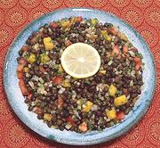

|
Chickpea ChaatIndia, Uttar Pradesh - Kala Chana Chaat | ||||
| Makes: Effort: Sched: DoAhead: |
1-3/4 # ** 40 min Yes |
Made with Desi type Chickpeas (Kala Chana, Bengal Gram), this popular chaat is more substantial than most and could serve as a vegetarian lunch. | |||
|
1 ar 1/2 ------ 5 5 1 ------ 1/2 1 1/4 1/2 ------ 4 2 1 1 1/2 ------ |
c T ----- oz oz ----- t t t t ----- oz T T T t ----- |
Kala Chana (1) Water Salt (2) -- Aromatics Tomato Onion Chili, green (3) -- Spices Cumin Seeds Chaat Masala (4) Chili Powder (5) Amchur Powder (6) -- Finish Mango, ripe Cilantro Mint, fresh Lemon Juice Salt (7) ----------- |
Do Ahead - (9-1/2 hrs - 10 min work)
|